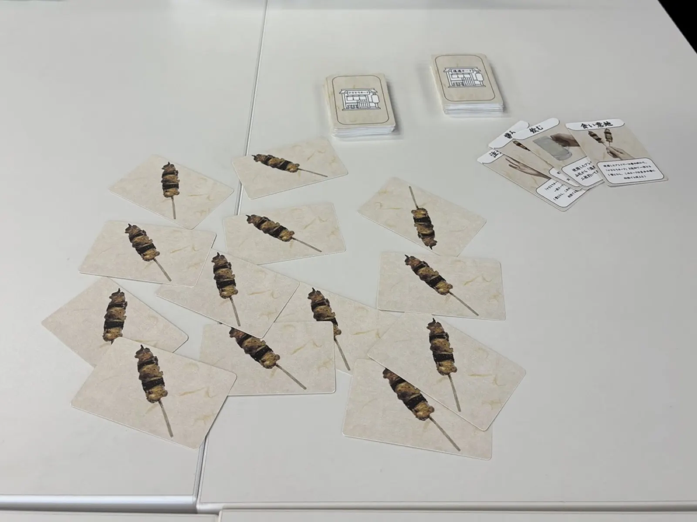
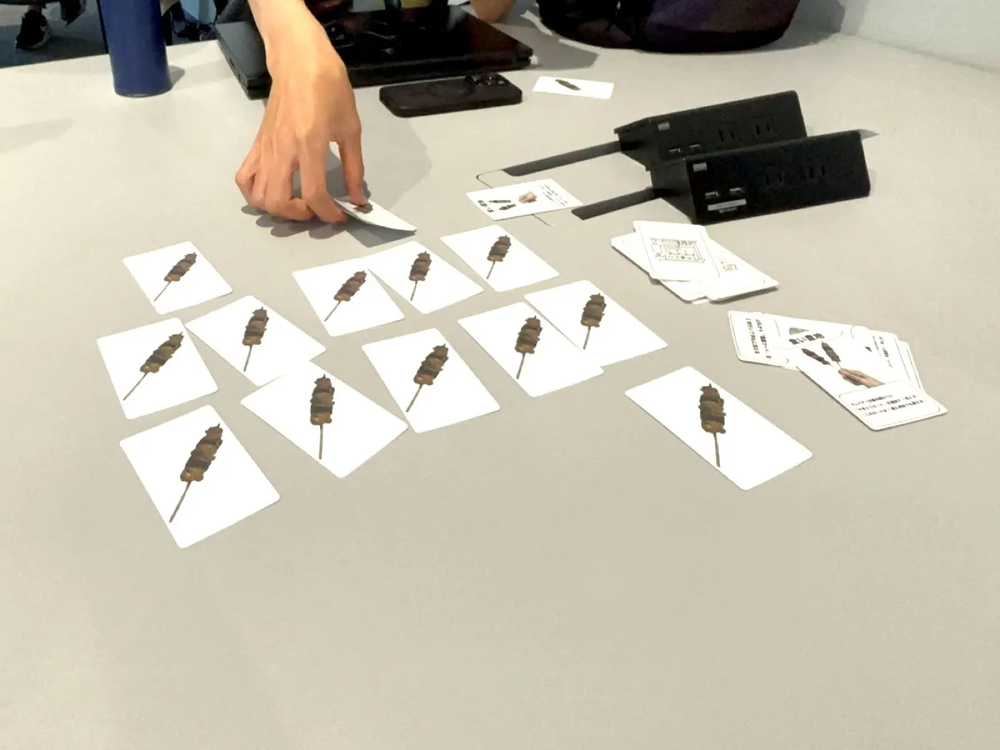
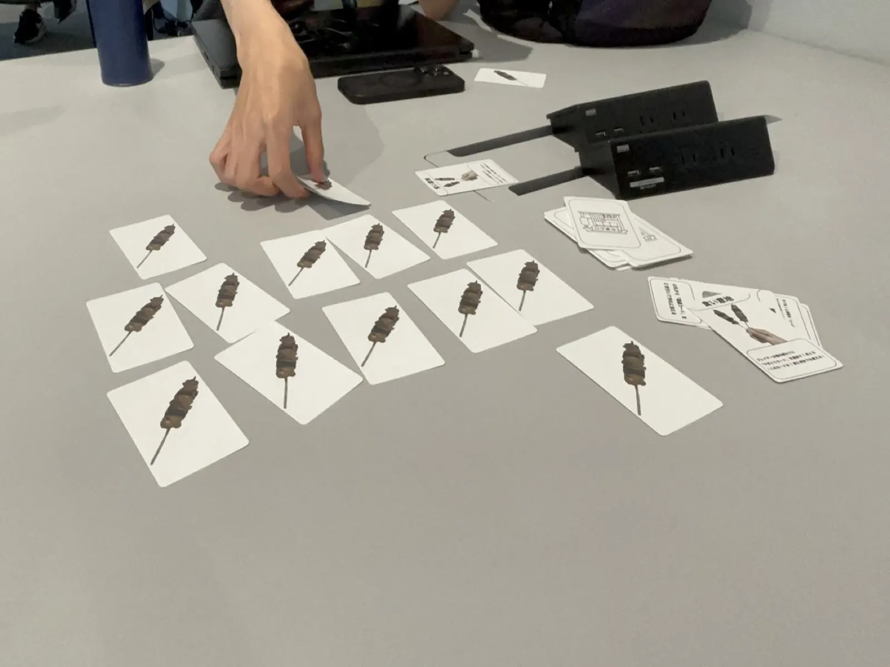
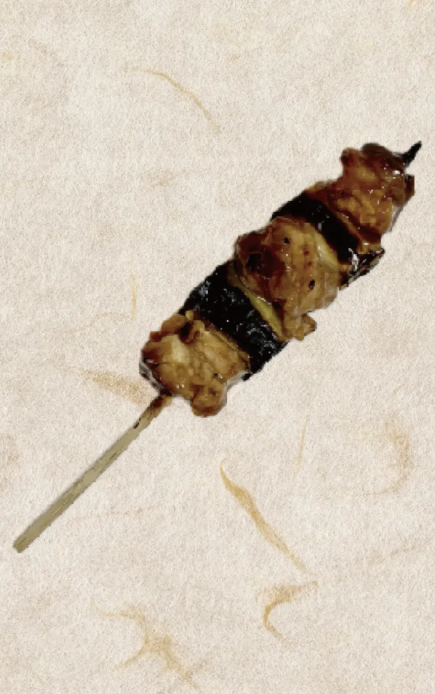
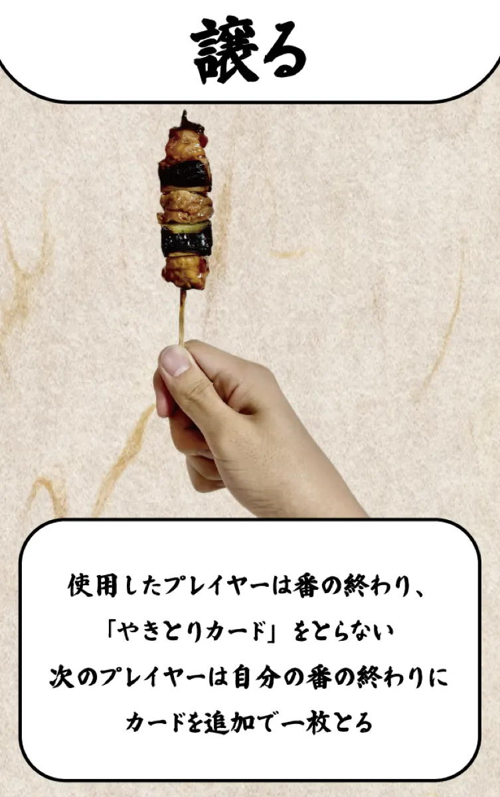
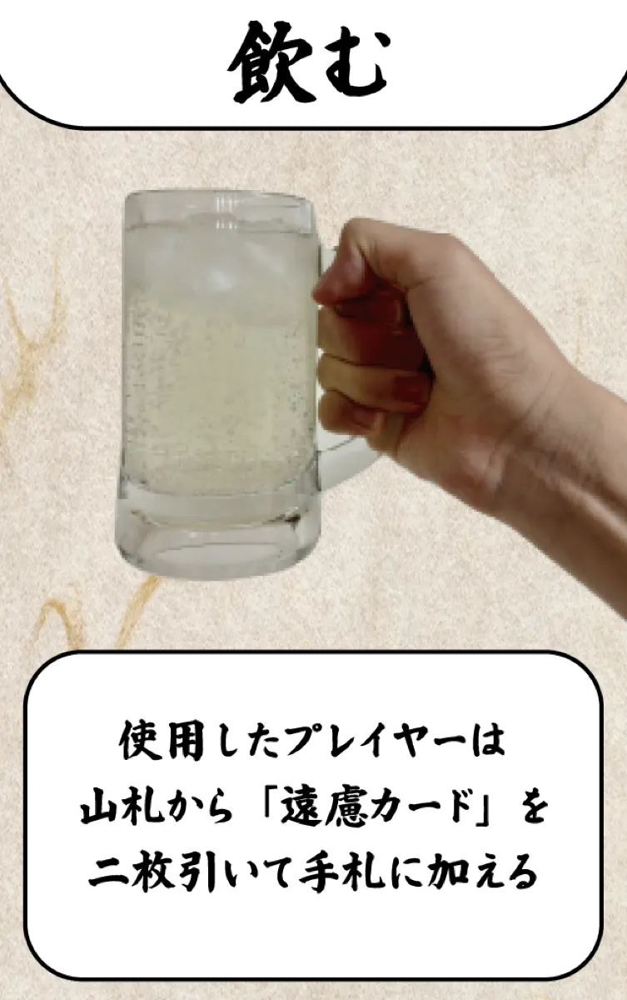
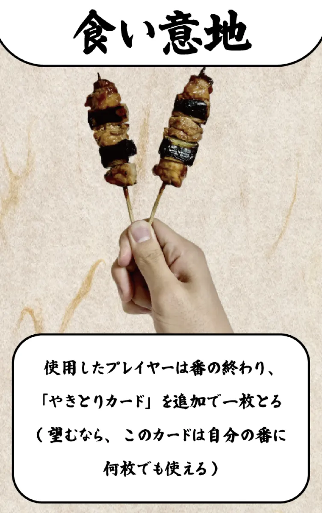
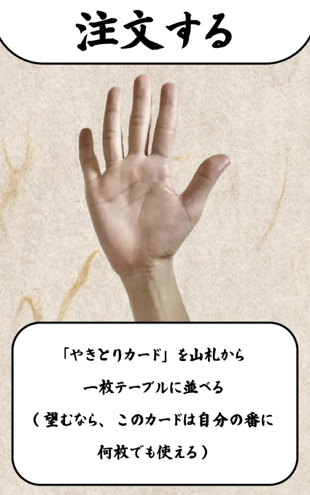
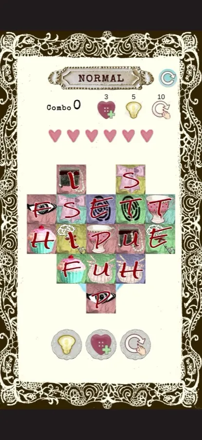

01作品概要
遊び方
焼き鳥カードを集めて得点を競う。手札の遠慮カードを使って、最後の一本を相手に譲る。
ここが好き
焼き鳥カードが最後の一枚に
なったときの、譲り合いの盛り上がり。


02きっかけとルール
最後の一本だけ、
なぜか譲り合う。

20 歳になって、バイトの先輩や社員さんに焼き鳥屋へ連れて行ってもらった。焼き鳥がたくさんあるうちは、みんな遠慮せずに食べる。なのに最後の一本になると、急に譲り合いが始まる。その光景がおもしろくて、ゲームにした。
ルール
集めるほど得点
焼き鳥カードを多く集めるほど得点。
最後の一本で最下位
取った人は、枚数に関係なく最下位。
遠慮カードで譲る
手札の効果で、最後の一本を相手に譲る。
03遠慮カード
居酒屋の「遠慮」を、4 枚のカードに。
手札は 4 枚。自分の番に、望むなら遠慮カードを 1 枚使い、テーブルから焼き鳥カードを 1 枚とる。
場に並ぶカード

焼き鳥カード
多く集めるほど上位。最後の 1 枚をとると、最下位。
遠慮カード（手札）

譲る
この番は焼き鳥をとらない。次の人が 1 枚多くとる。

飲む
山札から遠慮カードを 2 枚引いて、手札に。

食い意地
番の終わりに、焼き鳥を 1 枚多くとる。（何枚でも使える）

注文する
山札から焼き鳥を 1 枚テーブルに足す。（何枚でも使える）

次の作品
その他の作品
mystery tiles（優秀賞）／ TAUT